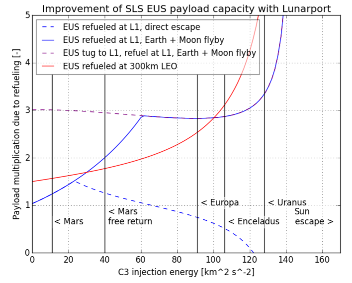
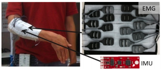
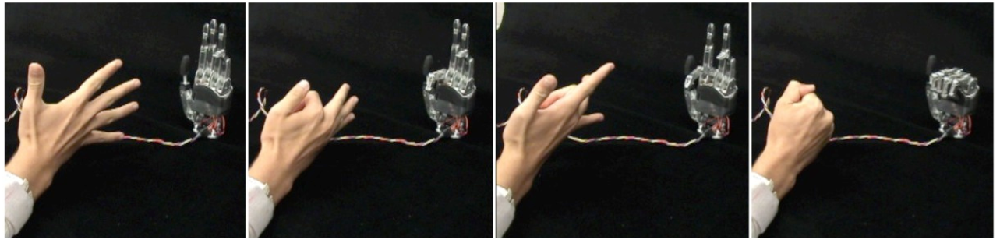

Publications¶
Rocket-Propelled Aircraft¶
Development of low-thrust solid rocket motors for small, fast aircraft propulsion¶

Matthew Vernacchia, Ph.D. Thesis, Massachusetts Institute of Technology, 2020.
pdf available here
pdf available here
Development, modeling and testing of a slow-burning solid rocket propulsion system¶

Matthew Vernacchia, MS Thesis, Massachusetts Institute of Technology, 2017.
pdf available here
pdf available here
Space Exploration¶
Strategies for reuse of launch vehicle first stages¶

Matthew Vernacchia, Kelly Mathesius, International Astronautical Congress, 2018.
pdf available here
pdf available here
Enabling deep space exploration with an in-space propellant depot supplied from lunar ice¶

Sophia Casanova, Jack Henry de Frahan, Vinicius Guimaraes Goecks, ... Matthew Vernacchia, ..., AIAA SPACE Forum, 2017.
DOI: 10.2514/6.2017-5376, pdf available here
DOI: 10.2514/6.2017-5376, pdf available here
The Lunarport concept, a launch and supply station for deep space missions¶

A comparative study of the two concepts elaborated at the 2017 Caltech Space Challenge.
Jerome Gilleron, Danielle DeLatte, Donal O’Sullivan, Pádraig Lysandrou, Joseph Sparta, Gary Li, ... Matthew Vernacchia, ..., IAA Symposium on the Future of Space Exploration Towards the Moon Village & Beyond, 2017.
Robotics¶
Systems and methods for obtaining user command from gaze direction¶
Matthew Vernacchia, US Patent 8 723 798, 2014. link
Gesture-based robot control with variable autonomy from the JPL BioSleeve¶

Michael T Wolf, Christopher Assad, Matthew Vernacchia, Joshua Fromm, Henna L Jethani, IEEE International Conference on Robotics and Automation, 2013.
DOI: 10.1109/ICRA.2013.6630718, pdf available here
DOI: 10.1109/ICRA.2013.6630718, pdf available here
Decoding static and dynamic arm and hand gestures from the JPL BioSleeve¶

Michael T Wolf, Christopher Assad, Adrian Stoica, Kisung You, Henna L Jethani, Matthew Vernacchia, Joshua Fromm, Yumi Iwashia, 2013.
DOI: 10.1109/AERO.2013.6497171
DOI: 10.1109/AERO.2013.6497171